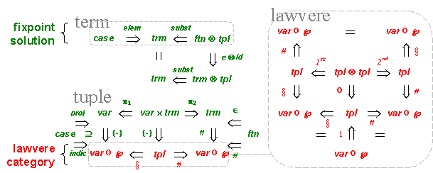
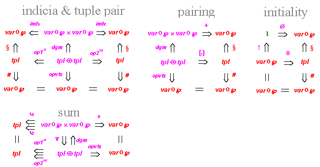
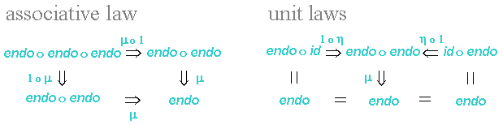

Terms
Expressions
Review

This document gives an introductory
discussion of the IFF Namespace
for FOL Languages (IFF-FOL). It closely follows the architecture
illustrated in Figure 1. To specify this namespace, we combine the
namespaces for terms (IFF-TRM) and
expressions (IFF-EXPR). Mathematically, the context of FOL languages is
the product of the context of terms (function symbols and variables)
and the context of expressions (relation symbols and variables) fibered
over the context of variables (sets and bijections). As such, FOL
languages or language morphisms are easy to axiomatize; the main
technical problem is to use term tuples rather than variations for
substitution – variations are term tuples with no function symbols. The
last section contains a short review of several important notions used
in the IFF-FOL. The
axiomatization
of the IFF-FOL is given separately.
| Basics Terms Expressions Review |
|
| Figure 1: The FOL Architecture | |
In the IFF approach, first
order logic is factored into two main components, the "term
component" and the "expression component", plus a third extensional
component called the "equational component". The term component is
determined by variables and function symbols,
whereas the
expression component is primarily determined by variables and relation
symbols, and only secondarily determined by function symbls. The FOL
namespace unites the expression namespace with the
term namespace by replacing variations with term tuples. The basic
notion of
the IFF-FOL is that of a first order logic (FOL) language (signature or lexicon).
Languages are related through language morphisms. FOL
languages and FOL language morphisms form the
category FOL-Lang.
This section gives an introductory discussion of the term component of the IFF-FOL.

| var |
variable set |
elem |
element – variable
as term |
|
| ftn |
function (symbol)
set |
∈ | embedding – function as term | |
| ℘ | power set operator |
# | function arity |
|
| case |
indicia-member pair set |
proj |
case projection |
|
| indic | case indication | |||
| trm |
term set |
# | term arity | |
| var × trm |
variable-term pairs |
π1, π2 | indexed-term projections |
|
| {-} | singleton – term as tuple | |||
| ftn ⊗ tpl |
function-tuple substitutable
pairs |
subst | tuple substitution into function | |
| trm ⊗ tpl |
term-tuple substitutable pairs |
subst | tuple substitution into term | |
| tpl | tuples (of terms) | # | tuple arity | |
| § | tuple index | |||
| tpl ⊗ tpl | tuple-tuple substitutable pairs | o | lawvere composition | |
| var ο ℘ | indicia (subsets of variables) set | 1 |
lawvere identity (indicia as
tuple) |
Figure 2: Basic Term Functors and Natural
Transformations
The
architecture of
the term
component of FOL languages is illustrated in Figures 2
and 3. Figure 2 illustrates
the basic architecture, and Figure 3 represents the term tuple
coproduct
architecture. Figure 2
consists of three sub-diagrams – the term sub-diagram (upper left), the
term tuple sub-diagram (lower left) and
the lawvere sub-diagram (right). The term sub-diagram illustrates the
fixpoint
solution for terms,
the
term tuple sub-diagram illustrates the embedding structures for term
tuples,
and
the lawvere sub-diagram illustrates the Lawvere construction. The
fixpoint solution
for
terms
embeds variables (variable cases) as elementary terms and substitutable
function-tuple pairs
as composite
(substitution) terms. Function symbols are embedded as atomic terms and
indexed-terms are embedded as singleton term tuples.
The central concept in the term component of the IFF-FOL is the Lawvere construction, which serves as a framework for FOL logic and its categorical logic extension. The Lawvere construction is a collection of (small) categories and functors indexed by FOL languages and FOL language morphisms. Abstractly, the Lawvere construction is a (small) category object in the (large) category of functors and natural transformations between the categories FOL-Lang and Set. The Lawvere category (see the red sub-diagram in Figure 2) is a parametric construction based upon the notion of a FOL language. Objects in the Lawvere category, called indicia, are subsets of variables. Morphisms in the Lawvere category are term tuples, which are set-theoretic versions of term sequences. At the base level, any function between indicia is a term tuple, performing the operations of projection and duplication (copy). Composition in the Lawvere category is tuple substitution. Identity in the Lawvere category is indicia set function identity.

| ∅ | initial Lawverian
indicia |
|||
| 0 |
counique term tuple |
|||
| var ο ℘ × var ο ℘ | indicia pair | ind1, ind2 |
indicia pair
projections |
|
| + | binary Lawverian coproduct | |||
| tpl ⊕ tpl | tuple-tuple pairable pairs | op1st, op2nd |
tuple pair
projections |
|
| [,] | tuple (co)pairing |
Figure 3: Lawvere Coproduct Functors and Natural Transformations
The nodes in Figure 3 represent
coproduct functors from FOL-Lang
to Set. The edges in Figure 3
represent natural transformations
between these coproduct functors.
These are the various functors and natural
transformations associated with the coproduct structure of Lawvere
categories and
functors. There is a
simple functor tpl for
term tuples. As mentioned before, this is inductively defined. There
are two
composite functors:
var ο ℘
and tpl ⊕
tpl,
for
indicia and pairable tuple pairs, respectively. The ‘⊕’ symbol
refers
to a fibered Cartesian product – the arity of the two term tuples must
match.
Any of the natural transformations in
Figures 2 and 3 must satisfy naturality conditions. Take for example
the term arity natural transformation
# : trm ⇒ var ο ℘ : FOL-Lang → Set
whose source category is the category
of FOL languages FOL-Lang,
whose target category is the category of
sets Set, whose source
functor is the term functor trm :
FOL-Lang → Set, whose target functor is the
indicia functor var ο ℘ :
FOL-Lang → Set, and whose Lth
component is the term arity function #(L) : trm(L) → ℘var(L) for any FOL
language L.
Then, for any FOL language morphism f : L1 → L2,
term arity must satisfy the commuting diagram trm(f) · #(L2) = #(L1) · ℘var(f), which
represents two conditions: (1) the naturality
condition of the term arity natural transformation for the FOL language
morphism f,
and (2) the
fact that FOL language morphism f preserves term
arity. A similar
assertion can be made for any of the natural transformations
in Figures 2 and 3; and this is axiomatized in this namespace. In
addition, a third condition holds for any of the Lawvere-related
natural transformation axiomatized in this namespace. Take for example,
the tuple arity natural transformation
# : tpl
⇒ var ο ℘ :
FOL-Lang → Set
whose Lth
component is the tuple arity function #(L) : tpl(L) → ℘var(L) for any FOL
language L.
Then, for any FOL language morphism f : L1 → L2,
tuple arity must satisfy the commuting diagram tpl(f) · #(L2) = #(L1) · ℘var(f), which
represents three conditions: (1) the naturality
condition of the term arity natural transformation for the FOL language
morphism f,
(2) the
fact that FOL language morphism f preserves term
arity; and (3) the fact that the Lawvere functor preserves target
(arity).

| endo | term monad
endofunctor |
η | term monad unit |
|
| μ | term monad
multiplication |
Figure 4: Term Monad Functors and Natural Transformations
A monad construction
exists for terms in FOL. The abstract algebraic structure of the term
construction is
concentrated in the term monad
(Figure 4)
Figure 5: The Term-Tuple Fixpoint Solution
Terms and term tuples are corecursively defined. This specification replaces the traditional recursive tree-forest set fixpoint equations
(where ‘A’
is the parameter set, ‘≅’ denotes bijection in particular or
isomorphism in general, ‘1’
denotes a generic singleton set, ‘+’ denotes disjoint union, and
‘×’ denotes Cartesian product, and ‘stack(-)’ is the stack
operator which is itself a fixpoint solution) with the recursive
term-tuple set fixpoint equation pair
(where ‘case(L)’ denotes the
set of cases, variables-with-arity, or indicia-contained-variable
pairs, ‘ftn(L)’ denotes the
set of function symbols, and ‘⊗’
denotes the combinator for
function-tuple pairs that
requires a match between function arity to
tuple index). Categorically, the term-tuple set pair is the fixpoint
solution (Figure 5)
for the ω-continuous endofunctor fixpt(L)
:
Set ×
Set → Set × Set on the
category Set
× Set
defined by
fixpt(L)(〈X,
Y〉)
= 〈case(L) + ftn(L)⊗Y,
tpl(X)〉.
The abstract syntax of FOL terms, which
is illustrated in Figure 5, is
parametric: there is a name for
the parameter language or lexicon ‘L’ and also a
name for FOL terms ‘trm(L)’. There is a
collection of synthetic/constructor operators, a collection of
analytic/selector partial operators and axioms that relate the two
collections.
There is a collection of two synthetic/constructor injective
operators on FOL
terms:
(where the element operator 'elem(L)' embeds
variables as terms, and the substitution operator, aka the application
operator, ‘subst(L)’ substitutes
term tuples into function symbols; in other words, applies function
symbols to term tuples). The coproduct copairing of these two functions
is the resolution bijection
The substitution operator is extendible to composition in a Kleisli-like term category.
There is a collection of analytic/selector
operators on FOL terms
with the two subgroup clusters in one-one correspondence with the two
synthetic/constructor operators (their inverse):
where the boolean operator ‘is-elemL’ is for the elementary term domain, the indicia partial operator ‘indL’ selects the indicia component of an elementary term, and the variable partial operator ‘varL’ selects the variable component of an elementary term.
where the boolean operator ‘is-compL’ is for the composite term domain, the function symbol partial operator ‘ftnL’ selects the function component at the top of a composite term, and the tuple partial operator ‘tplL’ selects the tuple component underneath the top of a composite term.
These operators satisfy the defining FOL term abstract data type
semantics: there are axioms for the elementary and composite operators.
which states that any FOL term constructed by the element operator is elementary and is decomposable into the indicia (subset of variables) and variable components
which states that every elementary FOL term is constructible using
the element operator from its index and variable components.
which states that any term constructed by the substitution operator is composite and is decomposable into the original function symbol and term tuple.
which states that every composite FOL term is constructible using the substitution operator from the (substitutable) pair of its components.
The concepts of variable and relation (Figure 6) are the defining attributes of the expression component of the IFF-FOL. The central data structure in the expression component is the concept of expression. This recursive construction over languages is the solution to a fixpoint equation (see the blue sub-diagram of Figure 6). In full, the expression construction gives an extended language, with an embedding map connecting a language to its expression extension. The concept of arity is an attribute defined on relations and expressions, in order of increasing generality. The arity of an expression is loosely a set-theoretic upper bound for the variables occurring freely in the expression. Arity is an indicia. Expressions can be either atomic or composite. Atoms are relation-tuple pairs that match the relation arity to the tuple index. The atom construction, and its relation and tuple component attributes, is based upon the pullback along relation arity and tuple index. Composites are defined by logical connectives and quantifiers. In the core, following existential graphs, we use only negations, conjunctions and existential quantifications. Other connectives and quantifiers can be defined in terms of these. The holds construction represents and embeds atoms as atomic expressions. The negation construction represents and embeds expressions as negative expressions. The conjunction construction represents and embeds expression subsets as conjunctive expressions. In the basic IFF representation of FOL, the expression subset construction is the power of expressions; in an extended IFF representation of FOL that follows categorical logic, the expression subset construction requires a common arity. The quantification construction represents and embeds expression cases as (existentially) quantified expressions. The case construction is a sum construction used by the quantification operator. The case construction, and its indication and projection component attributes, is the coproduct of expression arity. The concepts of composition and identity (Figure 6) are composite constructors for tuples.
| var |
variables |
elem |
element –
variable as term |
|
| rel |
relation
symbols |
@ | embedding – relation as atom | |
| ℘ | power set
operator |
# | relation/expression
arity |
|
| atm | atoms | ◊ | holds operator (injection) | |
| expr |
expressions |
¬ | negation operator
(injection) |
|
| expr ο ℘ | expression-subsets |
ˆ | conjunction operator (injection) | |
| case |
expression-variable
pairs |
∃ | quantification operator
(injection) |
|
| indic, proj | case indication and projection | |||
| tpl | tuples | #, § | tuple arity and
index |
|
| tpl ⊗ tpl | tuple-tuple composable pairs | Ο | lawvere composition | |
| var ο ℘ | indicia (subsets of
variables) |
1 |
lawvere identity (indicia as
tuple) |
Figure 6: Basic Expression Functors and Natural Transformations
The basic architecture of the expression component of FOL languages is illustrated in Figure 6. This consists of three sub-diagrams – the expression sub-diagram (upper left), the arity sub-diagram (lower left) and the lawvere sub-diagram (right). The expression sub-diagram and the arity sub-diagram illustrate the fixpoint solution for expressions and the co-recursive definition of expression arity. The lawvere sub-diagram illustrates the Lawvere construction for tuples. The fixpoint solution for expressions embeds atoms as atomic expressions via the holds operator, embeds expressions as negative expressions via the negation operator, embeds expression-subsets as conjunctive expressions via the conjunction operator, and embeds expression cases as (existentially) quantified expressions via the quantification operator. Atoms are projected onto their relation and tuple components, and relation symbols are embedded as atoms.
The nodes in Figure 6 represent basic functors from FOL-Lang the category of FOL languages and FOL language morphisms to Set the category of (small) sets and set functions. The edges in Figure 6 represent natural transformations between these basic functors. There are five simple functors var, rel, tpl, case and expr, for variables, relation symbols, tuples, expression cases and expressions, respectively. The first three are basic, the fourth is composite and the last is inductively defined. Based on these, there are three composite functors: var ο ℘, expr ο ℘ and tpl ⊗ tpl, for indicia (variable subsets), expression-subsets and composable tuple-tuple pairs, respectively. The ‘⊗’ symbol refers to a matched Cartesian product – the arity of the first tuple matches the index of the second tuple. Any of the natural transformations in Figure 6 must satisfy naturality conditions. Take for example the expression arity natural transformation
whose source category is the category of FOL languages FOL-Lang, whose target category is the category of sets Set, whose source functor is the expression functor expr : FOL-Lang → Set, whose target functor is the indicia functor var ο ℘ : FOL-Lang → Set, and whose Lth component for any FOL language L is the expression arity function #(L) : expr(L) → ℘var(L). Then, for any FOL language morphism f : L1 → L2, expression arity must satisfy the commuting diagram expr(f) · #(L2) = #(L1) · ℘var(f), which represents two conditions: (1) the naturality condition of the expression arity natural transformation for the FOL language morphism f, and (2) the fact that the FOL language morphism f preserves expression arity. A similar assertion can be made for any of the natural transformations in Figure 6; and this is axiomatized in this namespace. In addition, a third condition holds for any of the Lawvere-related natural transformation axiomatized in this namespace. Take for example, the tuple arity natural transformation
whose Lth
component for any FOL language L is the tuple
arity function #(L) : tpl(L) → ℘var(L). Then, for
any FOL language morphism f : L1 → L2,
tuple arity must satisfy the commuting diagram tpl(f) · #(L2) = #(L1) · ℘var(f), which
represents three conditions: (1) the naturality condition of the tuple
arity natural transformation for the FOL language
morphism f,
(2) the fact that the FOL language morphism f preserves
tuple arity; and (3) the fact that the Lawvere functor preserves
the target (arity) of tuples.
| endo | expression monad
endofunctor |
η | expression monad
unit |
|
|
|
μ | expression monad
multiplication |
Figure 7: Expression Monad Functors and Natural Transformations
A monad construction exists for expressions in FOL. The abstract algebraic structure of the expression construction is concentrated in the expression monad (Figure 7)
〈endo, η, μ〉,
In contract to the universal algebra situation discussed above, this monad is not associated with free algebras, but with "free FOL languages" – for any FOL language L, the extension FOL language endo(L) is free over L. We use this to extend the notion of a FOL language morphism to the freer notion of a FOL language interpretation where the image of source relation symbols is not restricted to target relation symbols, but can be mapped to target expressions. The algebraic semantics can likewise be extended.
Figure 8: The Expression Fixpoint Solution
The abstract syntax for FOL expressions, which is illustrated in Figure 8, is parametric: there is a name for the parameter FOL language or lexicon ‘L’ and also a name for FOL expressions ‘expr(L)’. There is a collection of synthetic/constructor operators, a collection of analytic/selector partial operators and axioms that relate the two collections.There is a collection of four synthetic/constructor operators on expressions:
◊ L = holds(L) : atm(L) → expr(L)
¬L = neg(L) : expr(L) → expr(L)
Λ L = conj(L) : ℘ expr(L) → expr(L)
∃L = quant(L) : case(L) → expr(L)
where '◊ L((R, α))’ constructs the atomic expression of an arbitrary atom (R, α) ∈ atm(L) = ∪X∈ var(L) rel( L)(X) ×tpl( L)X consisting of an X-ary relation symbol R ∈ rel( L)(X) and a tuple α ∈ tpl( L)X with index X, ‘¬L(φ)’ constructs the negation of an arbitrary L-expression φ ∈ expr(L), ‘Λ L({φ1, φ2, …, φ n})’ constructs the conjunction of an arbitrary subset of L-expressions {φ1, φ2, …, φ n} ∈ ℘ expr(L), and ‘∃L((φ, x))’ constructs the existential quantification of an arbitrary expression case (φ, x) ∈ case(L) ⊆ expr(L)× var(L) consisting of an arbitrary L-expression φ ∈ expr(L) and a variable x ∈ var(L) with x ∈ arity(L)(φ). The four synthetic/constructor operators are individually injective and jointly surjective.
There is a collection of analytic/selector operators on expressions, with the four subgroup clusters in one-one correspondence with the four synthetic/constructor operators (their inverses):
is-atm(L) ⊆ expr(L)
atm(L) :
expr(L) →
atm(L)
[rel(L) :
expr(L) →
rel(L)(X)
for
X ∈ ℘
var(L), tpl(L) :
expr(L) → tpl(L)
X for X ∈ ℘
var(L)]
is-neg(L) ⊆ expr(L)
expr(L) :
expr(L) →
expr(L)
is-conj(L) ⊆ expr(L)
subset(L) :
expr(L) →
℘
expr(L)
is-quant(L) ⊆ expr(L)
case(L) :
expr(L) →
case(L)
[expr(L) :
expr(L) →
expr(L),
var(L) :
expr(L) →
var(L)]
These operators satisfy the defining FOL expression abstract syntax (abstract datatype semantics).
which states that any FOL expression constructed by the holds operator is atomic and is decomposable into the original relation symbol and tuple.
which states that every atomic FOL expression is constructible using the holds operator on its component relation and tuple.
which states that any FOL expression constructed by the negation operator is negative and is decomposable into the original L-expression ψ ∈ expr(L).
which states that every negative expression is constructible using the negation operator on the underlying expression.
which states that any FOL expression constructed by the conjunction operator is conjunctive and is decomposable into the original L-expression subset Φ ∈ ℘ expr(L).
which states that every conjunctive expression is constructible using the conjunction operator on the underlying expression subset.
which states that any expression constructed by the existential uantification operator is existentially quantified and is decomposable into the original L-case (φ, x) ∈ case(L) consisting of an arbitrary L-expression φ ∈ expr(L) and a variable x ∈ var(L) with x ∈ arity(L)(φ).
which states that every existential expression is constructible using the existential quantification operator on its component expression and bound variable.
Finally, following John McCarthy we require that each expression satisfy exactly one of these Boolean predicates. That is, that an expression is either (1) an atom, (2) a negation, (3) a conjunction or (4) an existential quantification,
but not any two such things (there are 6 possibilities).
That is, that those four domains
partition the set of expressions.
Actually, these two axioms are embedded within the fixpoint solution
and we are just making them explicit here.
The notion of abstract syntax is a technical term introduced by John McCarthy: “The predicates and functions whose existence and relations define the syntax, are precisely those needed to translate from the language, or to define the semantics”. The abstract syntax of FOL languages is the highest meta-level needed in order to define the syntax and model theory of FOL languages. The orientation in the McCarthy statement is towards the notion of an abstract data type, which defines the abstract syntax and formal semantics of data types. In general, abstract syntax consists of a collection of synthetic/constructor operators, a collection of analytic/selector operators, and a collection of axioms that relate the two kinds of operators. For recursive data types, the synthetic/constructor operators are unpacked from the initial (or final) fixpoint solution (bijection) of set equation(s). The analytic/selector operators are inverse to the synthetic/constructor operators, and this is the content of the axiomatization for the abstract data type. In fact, the axioms form subcollections, which are in one-one correspondence with the synthetic/constructor operators (and their analytic/selector inverses). The analytic/selector functions are partial functions, each has an associated Boolean test for its domain, and the correct analytic programming style is to test for “in domain” before applying any of the analytic/selector operators. Finally, to quote McCarthy, “if both the analytic and synthetic functions are given, we do not have the difficult and sometimes unsolvable analysis problems that arise when languages are described synthetically only".
α : fixpt(L)(expr(L)) → expr(L)
(bijection) of the fixpoint set equation
with the fixpoint set operator fixpt(L)(X), which is the sum of (1) the constant set of atoms atm(L), (2) the variable set X, (3) the power set ℘X and (4) the coproduct of the arity function #L : X → ℘expr(L). The synthetic/constructor operators are unpacked from the fixpoint solution bijection α. For any expression language L, the set of expressions expr(L) and the expression arity function #L : expr(L) → ℘var(L) are corecursively defined. The case component of the expression set is the coproduct of the arity function case(L) = ∑(#L), and the source of the arity function is the expression set. The approximation sequence for the fixpoint solution of expressions starts as: X0 = Ø, X1 = atm(L) + true, … , and ends as the complete expression set X@ = expr(L)in the limit (fixpoint), where atm(L) is a set constant and true is the conjunction of the empty subset of the empty set. In co-recursive parallel, the arity function approximation sequence starts as the empty arity function #L : Ø → ℘var(L) at step 0, the atomic arity function #L : atm(L) + true → ℘var(L) at step 1 where the arity of true is empty, … , and ends as the complete expression arity function #L : expr(L) → ℘var(L) in the limit (fixpoint). The coproduct of these approximate arity functions is clearly increasing.
Since this is parametric, there is a name for the parameter type ‘P’. There is a name for the stack datatype ‘stk(P)’.
There is a collection of synthetic/constructor operators on stacks:
empty(P) : stk(P)
push(P): P ×stk(P) → stk(P)
where ‘empty(P)’ denotes the empty stack and ‘push(P)(p, s)’ places the item p ∈ P of type P onto the top of stack s ∈ stk(P). The stack data type is a recursive data type compactly axiomatized as the fixpoint solution
α : (1 + P ×stk(P)) → stk(P)
(bijection) of the simple linear fixpoint set equation
where the synthetic/constructor operators are unpacked from the fixpoint solution bijection α.
is-empty(P) ⊆ stk(P)
where ‘is-empty(P)(s)’ is the Boolean test that returns true when the stack s ∈ stk(P) is empty and false otherwise, ‘is-nonempty(P)(s)’ is the complementary Boolean test, ‘top(P)(s)’ returns the “top” of stack s ∈ stk(P), and ‘pop(P)(s)’ returns the “rest” of stack s ∈ stk(P). Since both top and pop are partial functions whose domain is the set of nonempty stacks, the correct analytic programming style is to test for nonempty stack before applying either of these functions.
These operators satisfy the defining stack abstract data type semantics:
is-nonempty(P)(empty(P))
which states that the empty stack is empty.
∀(p : P, s : stk(P)) (is-nonempty(P)(push(P)(p, s)) & top(P)(push(P)(p, s)) = p & pop(P)(push(P)(p, s)) = s)
which states that the result of a push is a nonempty stack, whose top is the thing pushed and whose pop is the original stack.
∀(s : stk(P)) (is-nonempty(P)(s) ⇒ (push(P)(top(P)(s), pop(P)(s)) = s))
which states that every nonempty stack is constructible using the push operator from its top and pop.
In universal algebra, the notion of a free algebra is associated with an endofunctor that assigns to any set the set of elements of the corresponding free algebra. This endofunctor comes equipped with two natural transformations that give it a "monoid"-like structure called a monad – one natural transformation embeds a set (thought of as variables) as terms and the other natural transformation is the free interpretation or action on the given set.A free algebra monad
〈endo, η, μ〉,
is a triple consisting of the following components:
This association between free algebra constructions and monads can be
abstracted and generalized – any adjunction gives a monad, which itself
is an alternate but related adjunction. In fact, in this sense
adjunctions, monads and their interconnections abstractly algebracize
Galois connections, closure operators and their interconnections.
The SUO-IFF documents contain many unicode characters, and so require a recent browser. But even some recent browsers fail to render SUO-IFF properly. You can test your browser here.